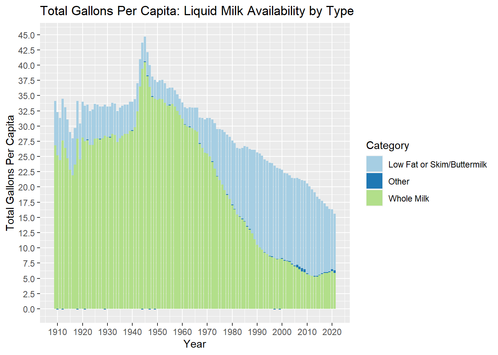
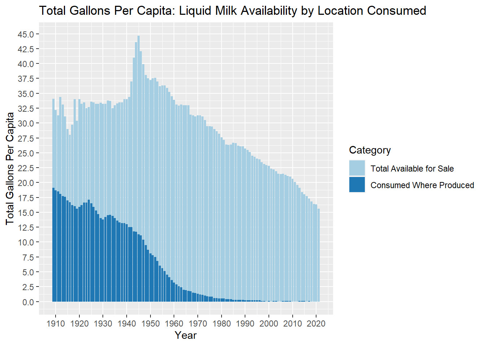
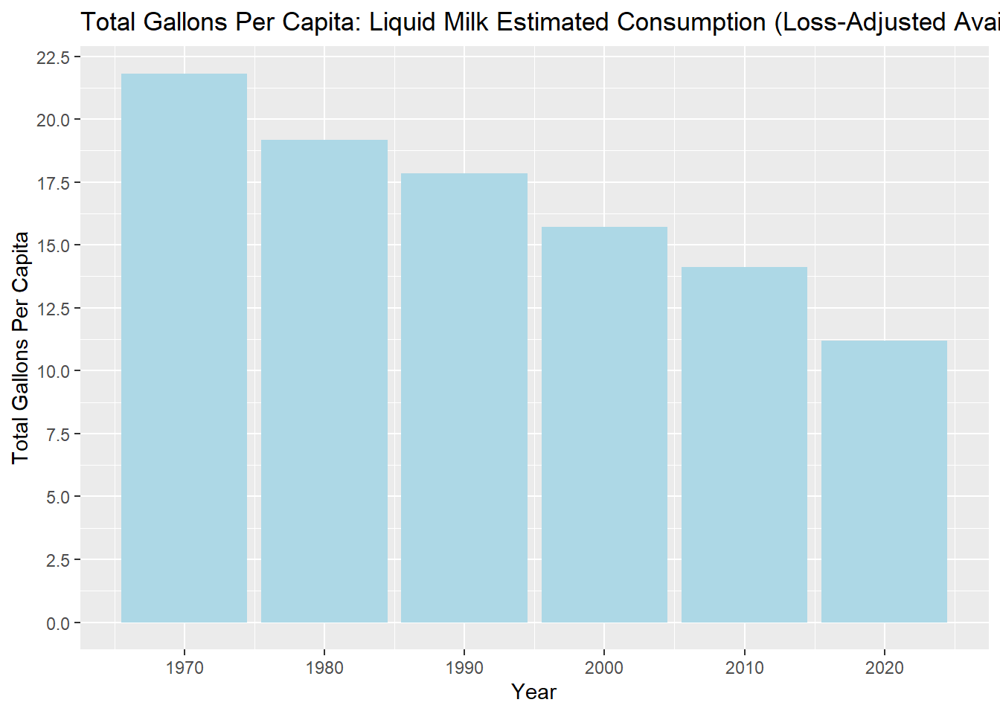

Gross “food production” data has been collected in the U.S. at a national level since the 1860s. Post-WWII, the USDA refined this data to improve planning capabilities, removing pre-consumer uses and waste to arrive at “food available for consumption”.
For this analysis, I chose one of these refined “availability” datasets that included detailed trends of liquid milk availability per capita from 1909-2021, or 113 years.
In researching the USDA datasets, I also found that the USDA now also estimates retail and personal food waste for an even more refined “loss-adjusted availability” number, i.e. consumption estimate. This data offers new value in understanding actual nutrition trends and patterns, as well as retail and consumer waste (for dairy, that’s an eye-opening 30+%).
For those of us who are not farmers or otherwise involved in the production and distribution of milk, milk production statistics may not be particularly interesting in themselves. However, food is necessary and common to all people across time and geography, and so national food supply data like this can provide evidence of other social and economic changes from wars to nutritional fads. And because it is so critical to societies, food supply data is deep, broad, and readily available: a great source of information.
For this exercise, I obtained a dataset from the USDA economic research service (ERS) containing detailed data on the per capita availability of fluid milk to consumers in the U.S. since 1909: (https://www.ers.usda.gov/webdocs/DataFiles/50472/dyfluid.xlsx?v=8029.7).
I cleaned, tidied, and analyzed this dataset as follows:
Total availability trends for three types of fluid milk products 1909 to present
Shift between “consumed where produced” vs. available for sale from 1909 to present
Estimated consumption trends since 1970 using retail + consumer food waste estimates by year
First I loaded the libraries:
library(tidyverse)
── Attaching core tidyverse packages ──────────────────────── tidyverse 2.0.0 ──
✔ dplyr 1.1.4 ✔ readr 2.1.5
✔ forcats 1.0.0 ✔ stringr 1.5.1
✔ ggplot2 3.4.4 ✔ tibble 3.2.1
✔ lubridate 1.9.3 ✔ tidyr 1.3.0
✔ purrr 1.0.2
── Conflicts ────────────────────────────────────────── tidyverse_conflicts() ──
✖ dplyr::filter() masks stats::filter()
✖ dplyr::lag() masks stats::lag()
ℹ Use the conflicted package (<http://conflicted.r-lib.org/>) to force all conflicts to become errors
library(dplyr)library(ggplot2)library(scales)
Attaching package: 'scales'
The following object is masked from 'package:purrr':
discard
The following object is masked from 'package:readr':
col_factor
library(RColorBrewer)
Then I loaded the main data table, skipping rows at the top where column names were merged across multiple columns and wrapped onto multiple rows. I renamed all columns, removed the footer rows, and changed the years to numeric to use in my charts later.
New names:
Rows: 121 Columns: 21
── Column specification
──────────────────────────────────────────────────────── Delimiter: "," chr
(2): ...1, ...17 dbl (19): --- Millions ----,
-----------------------------------------------...
ℹ Use `spec()` to retrieve the full column specification for this data. ℹ
Specify the column types or set `show_col_types = FALSE` to quiet this message.
• `` -> `...1`
• `` -> `...4`
• `` -> `...5`
• `` -> `...6`
• `` -> `...7`
• `` -> `...8`
• `` -> `...9`
• `` -> `...10`
• `` -> `...11`
• `` -> `...12`
• `` -> `...13`
• `` -> `...14`
• `` -> `...15`
• `` -> `...16`
• `` -> `...17`
• `` -> `...18`
• `` -> `...19`
• `` -> `...20`
• `` -> `...21`
colnames(df) <-c("yr","pop","whole_plain_cons","whole_plain_sales","whole_plain_tot","whole_flav","tot_whole","low_2_pct","low_1_pct","low_tot_plain","low_flav","low_subtot_plain_flav","buttermilk","skim","skim_buttermilk_cons","tot_low_skim_all","other_eggnog","other_misc","tot_other","tot_bev_sales","tot_bev_avail")df <-filter(df, yr %in% (1909:2021))df$yr<-as.numeric(df$yr)
This table contained a lot of detail and multiple cuts of the data (types and subtypes of beverages, some split into whether they were consumed at point of production or not).
For ease of analysis, I cleaned up the data a bit more by creating a summary table with only the columns I needed, including a new “all other” category, and checked totals:
This resulting table was clean and, with one observation per row (year), it was also tidy for analyses such as trends by year with % totals and other comparisons across categories (see tibbles in analysis below).
For other analysis including charts, I also needed to create a long tidy table with one observation equaling one year/category pair, by melting the category variables from column headers to rows, as follows:
1. Total availability trends for three types of fluid milk products 1909 to present
With the data now clean and tidied, I created a summary table and plotted the long term trends 1909-2021 for major categories of beverages by type, regardless if consumed on location or made available for sale: whole (plain and flavored), low fat (includes skim), and other (de minimis: includes the milk component of eggnog, etc.).
# Create plot: long tidy dataframe, one obs = one year/category pairggplot(df_avail_type, aes(x = yr, y = gallons, fill = category)) +geom_bar(stat="identity") +scale_fill_brewer(palette ="Paired", name ="Category", labels =c("Low Fat or Skim/Buttermilk","Other","Whole Milk") ) +scale_x_continuous(breaks =breaks_width(10))+scale_y_continuous(n.breaks=20, labels = scales::label_comma()) +xlab("Year") +ylab("Total Gallons Per Capita") +ggtitle("Total Gallons Per Capita: Liquid Milk Availability by Type")

Total availability per capita was fairly steady before WWII (with a dip during WWI, 1914-1917, see chart above). In contrast to WWI, there was a sharp rise during WWII: beginning in 1942 through 1947, reflecting perhaps better production planning related to the war or other factors. Peak production was reached in 1945, with 44.7 gallons of liquid milk reported available per capita:
df_wwii <-filter(df_tidy, yr %in% (1939:1948), category =="tot_bev_avail")df_wwii
The overall downward trend after WWII was precipitous: from the peak of 44.7 gallons per capita in 1945, availability descended to its lowest point of 15.6 gallons in 2021, the latest year reported in this dataset.
Shifts in product types occurred in the latter half of the century as well, including a clear rise in popularity of low fat + skim milk, from 5.0% of available gallons per capita in 1960 to 36.2% in 1980 and 62.3% in 2000. A slight retreat in 2020 to 59.5% marked a shift back to whole milk, perhaps related to keto diet trends.
2. Shift between “consumed where produced” vs. available for sale from 1909 to present
The next analysis was performed on the relationship between milk consumed at the point of production vs. available for sale.
df_avail_con <-filter(df_tidy, category %in%c("tot_consumed_on_site","tot_bev_sales"))# Display data table: create a wide tidy format, one obs = one year, to calc % trendsdf_avail_sum <-filter(df_avail_con, yr %in%c(1920,1940,1960,1980,2000,2020)) %>%pivot_wider(names_from = category,values_from = gallons) %>%mutate(percent_consumed_on_site = tot_consumed_on_site/(tot_consumed_on_site + tot_bev_sales))df_avail_sum
# Create plot: long tidy dataframe, one obs = one year/category pairggplot(df_avail_con, aes(x = yr, y = gallons, fill = category)) +geom_bar(stat="identity") +scale_fill_brewer(palette ="Paired", name ="Category", labels =c("Total Available for Sale","Consumed Where Produced")) +scale_x_continuous(breaks =breaks_width(10))+scale_y_continuous(n.breaks=20, labels = scales::label_comma()) +xlab("Year") +ylab("Total Gallons Per Capita") +ggtitle("Total Gallons Per Capita: Liquid Milk Availability by Location Consumed")

Note that in 1920, almost half (46.8%) of liquid milk products was consumed at the point of production, which fell to less than 10% by 1960 and was no longer reported in 2020.
Interestingly, the total gallons per capital available for sale in 2020 was less than that in 1920, when 46.8% of the milk produced was consumed at point of production and excluded from this metric.
3. Estimated consumption per capita trend
As mentioned in the introduction, the USDA provides broad estimates of post-production (retail and consumer) waste, in order to estimate loss-adjusted availability, a proxy for what we might call actual consumption: https://www.ers.usda.gov/webdocs/DataFiles/50472/Dairy.xlsx?v=2937.9
There are multiple caveats to this estimate, as this data is complex and rarely tracked (when was the last time you weighed your food waste?). Extensive documentation is available here: https://www.ers.usda.gov/data-products/food-availability-per-capita-data-system/loss-adjusted-food-availability-documentation/#usefulness
This data is hard to obtain but quite valuable in understanding not only patterns of waste but also patterns in actual American nutrition compared to recommendations or to historical patterns (example study summary: https://www.ers.usda.gov/webdocs/publications/82220/eib166%20summary.pdf?v=4270.2).
By applying the USDA retail + consumer waste estimates, we find the following trend:
Rows: 6 Columns: 2
── Column specification ────────────────────────────────────────────────────────
Delimiter: ","
dbl (2): yr, pct_loss
ℹ Use `spec()` to retrieve the full column specification for this data.
ℹ Specify the column types or set `show_col_types = FALSE` to quiet this message.
# Create plot: ggplot(df_avail_adj, aes(x = yr, y = loss_adjusted_avail)) +geom_bar(stat="identity", fill ="lightblue") +scale_x_continuous(breaks =breaks_width(10))+scale_y_continuous(n.breaks=10, labels = scales::label_comma()) +xlab("Year") +ylab("Total Gallons Per Capita") +ggtitle("Total Gallons Per Capita: Liquid Milk Estimated Consumption (Loss-Adjusted Availability)")

While the waste estimate went up slightly between 1970 and 2020, this chart closely tracks the previously-seen aggregate trends. However, it does add relatable context: Americans are now drinking less than one gallon per person per month, whereas in 1970, we were drinking nearly two gallons per person per month.